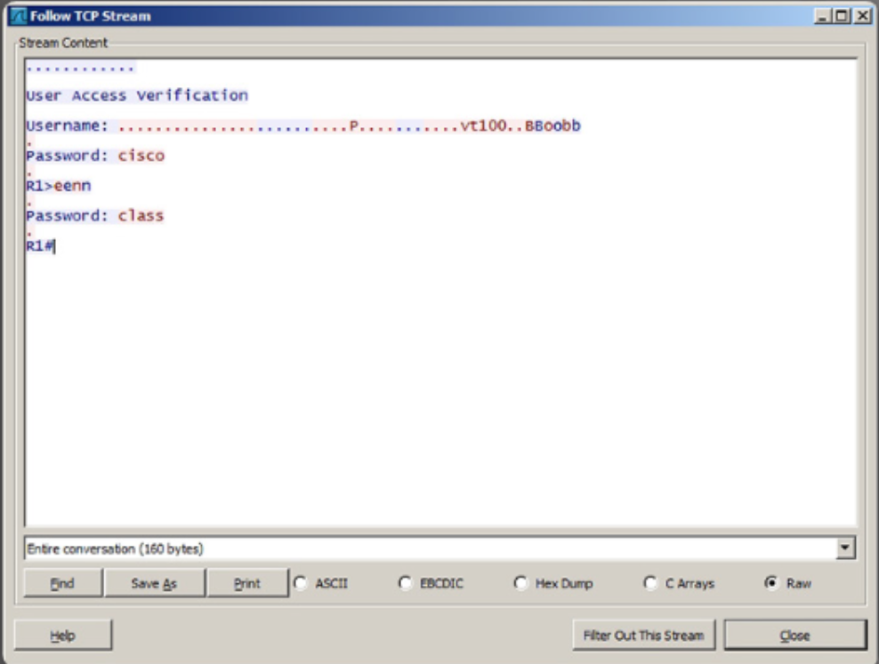
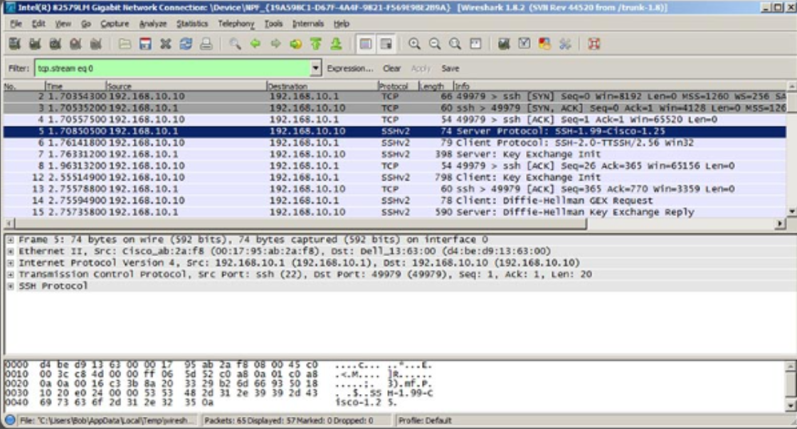
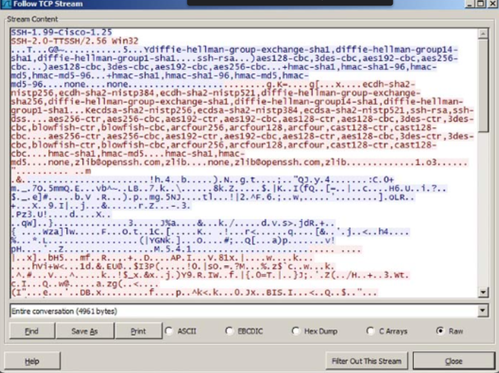
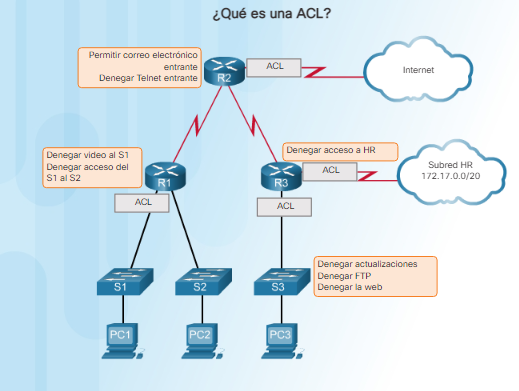

Cap.6 - El reino de los cinco nueves.
Las organizaciones que desean maximizar la disponibilidad de sus sistemas y datos pueden adoptar medidas extraordinarias para minimizar o eliminar la pérdida de datos...

Encantado de aprender AI, ML, Seg.Inf y DevNet con mis partners de Cisco y Avellaneda.
Es sencillamente increíble, el mundo que nos rodea está lleno de oportunidades esperando para aprender de ellas.
#[Code the future]
La protección del reino es un proceso continuo para proteger la infraestructura de red de una organización. Requiere que las personas permanezcan constantemente alerta a las amenazas contra
el reino y adopten medidas para evitar cualquier riesgo. Este capítulo analiza las tecnologías, los procesos y los procedimientos que los paladines cibernéticos utilizan para proteger los sistemas,
dispositivos y datos que conforman la infraestructura de red.
Una red es apenas tan segura como su enlace más débil. Es importante proteger los terminales que residen en la red. La seguridad de los terminales incluye la protección de los dispositivos
de infraestructura de red en la red de área local (LAN) y los sistemas finales, como las estaciones de trabajo, los servidores, los teléfonos IP y los puntos de acceso.
La protección de los dispositivos es una tarea fundamental para la seguridad de la red. Implica la implementación de métodos comprobados de protección física de los dispositivos de red.
Algunos de estos métodos implican el acceso administrativo seguro, el mantenimiento de las contraseñas y la implementación de comunicaciones seguras.
El sistema operativo desempeña un rol importante en la operación de un sistema informático y es el objetivo de muchos ataques. La seguridad del sistema operativo tiene un efecto en cascada en la seguridad general de un sistema informático.
Un administrador protege un sistema operativo mediante la modificación de la configuración predeterminada para que sea más seguro frente a las amenazas externas. Este proceso incluye la eliminación de servicios y programas innecesarios.
Otro requisito crítico de la protección de los sistemas operativos es la aplicación de actualizaciones y parches de seguridad. Las actualizaciones y los parches de seguridad son correcciones que las empresas lanzan en su esfuerzo por
mitigar las vulnerabilidades y corregir las fallas de sus productos.
Una organización debe tener un enfoque sistemático vigente para abordar las actualizaciones de sistemas mediante:
.PNG)
El malware incluye virus, gusanos, troyanos, registradores de teclado, spyware y adware. Todos invaden la privacidad, roban información, dañan el sistema o eliminan y corrompen datos.
Es importante proteger las computadoras y los dispositivos móviles usando software de antimalware de confianza. Los siguientes tipos de software de antimalware se encuentran disponibles:
Los parches son actualizaciones de códigos que proporcionan los fabricantes para evitar que un virus o gusano recientemente descubierto logre atacar con éxito. Periódicamente, los fabricantes combinan parches y actualizaciones en una aplicación de actualización integral denominada paquete de servicios.
Numerosos ataques de virus devastadores podrían haber sido mucho menos graves si más usuarios hubieran descargado e instalado el último paquete de servicios.
Windows verifica sistemáticamente el sitio web de Windows Update en busca de actualizaciones de alta prioridad que ayuden a proteger una computadora de las amenazas de seguridad más recientes. Estas actualizaciones incluyen actualizaciones de seguridad, actualizaciones críticas y paquetes de servicios.
Según la configuración seleccionada, Windows descarga e instala automáticamente todas las actualizaciones de alta prioridad que la computadora necesita o notifica al usuario que dichas actualizaciones están disponibles.
Es posible que algunas organizaciones quieran probar un parche antes de implementarlo en la organización. La organización utilizará un servicio para administrar los parches localmente en lugar de usar el servicio de actualización en línea del proveedor. Los beneficios de utilizar un servicio de
actualización de parches automatizado incluyen lo siguiente:
Una solución basada en el host es una aplicación de software que se ejecuta en una computadora host local para protegerla. El software funciona con el sistema operativo para prevenir ataques.


Al conectarse a la red local y compartir archivos, la comunicación entre las computadoras permanece dentro de la red. Los datos permanecen seguros porque están fuera de otras redes e Internet. Para comunicar y compartir recursos por una red que no es segura, los usuarios emplean una red privada virtual (VPN).
Una VPN es una red privada que conecta sitios o usuarios remotos a través de una red pública, como Internet. El tipo más común de VPN accede a una red privada corporativa. La VPN utiliza conexiones seguras dedicadas enrutadas a través de Internet desde la red privada corporativa hasta el usuario remoto.
Al conectarse a la red privada corporativa, los usuarios se convierten en parte de dicha red y tienen acceso a todos los servicios y recursos, como si estuvieran físicamente conectados a la LAN corporativa.
Los usuarios de acceso remoto deben tener un cliente de VPN instalado en sus computadoras para establecer una conexión segura con la red privada corporativa. El software de cliente de VPN cifra los datos antes de enviarlos al gateway de VPN de la red privada corporativa a través de Internet. Los gateways de VPN
establecen, administran y controlan las conexiones de VPN, también denominadas túneles de VPN.
Los sistemas operativos incluyen un cliente de VPN que el usuario configura para una conexión de VPN.

En esta práctica de laboratorio, demostrará el uso de una herramienta de auditoria de seguridad para proteger un sistema Linux.
Práctica de laboratorio: Protección del sistema Linux con lynis.
Uno de los componentes más importantesde la informática moderna son los dispositivos móviles. La mayoría de los dispositivos presentes hoy en día enla red son PC portátiles, tablets, smartphones y otros dispositivos inalámbricos.
Los dispositivos móviles transmiten datos mediante señales de radio que cualquier dispositivo con una antena compatible puede recibir. Por este motivo, la industria informática ha desarrollado un conjunto de dispositivos, productos y estándares de seguridad inalámbricao móvil. Estos estándares encriptan la información
transmitida a través de ondas de radio por los dispositivos móviles.
La privavidad equivalente por cable (WEP) es uno de los primeros y más usados estándares de seguridad Wi-Fi.
El estándar WEP brinda protecciones de encriptación y autenticación. Los estándares de WEP son obsoletos, pero muchos dispositivos aún admiten la WEP para la compatibilidad retrospectiva. El estándar de WEP se convirtió en un estándar de seguridad Wi-Fi en 1999 cuando las comunicaciones inalámbricas comenzaban a hacerse populares.
A perar de las revisiones al estándar y el incremento del tamaño de la clave, la WEP sufrió numerosas debilidades de seguridad. Los ciberdelincuentes podían descrifrar las contraseñas de WEP en minutos con el software gratuito disponible. Pese a las mejoras, la WEP sigue siendo muy vulnerable y los usuarios deben actualizar los sistemas
que dependen de la WEP.
La siguiente mejora importante a la seguridad inalámbrica fue la introducción del WPA y WPA2. El acceso protegido a Wi-Fi (WPA) fue la respuesta del sector informático a las debilidades del estándar de WEP. La configuración más común del WPA es WPA-PSK (clave precompartida). Las claves utilizadas por el WPA son de 256 bits, un aumento significativo
respecto de las claves de 64 y 128 bits empleadas por el sistema de WEP.
El estándar de WPA proporcionó varias mejoras de seguridad. Primero, el WPA proporcionó controles de integridad de mensajes (MIC) que podían detectar si un atacante había capturado y alterado los datos que pasaban entre el punto de acceso inalámbrico y el cliente inalámbrico. Otro avance de la seguridad de las claves fue el protocolo de integridad de la clave temporal
(TKIP). El estándar de TKIP mejoró la capacidad para manejar, proteger y modificar las claves de cifrado. La norma de cifrado avanzado (AES) reemplazó el TKIP para una mejor protección de la administración y cifrado de claves.
El WPA, como su predecesor WEP, incluyó varias vulnerabilidades ampliamente reconocidas. Como resultado, el lanzamiento del estándar de acceso protegido a Wi-Fi (WPA2) tuvo lugar en el año 2006. Una de las mejoras más importantes en la seguridad del WPA al WPA2 fue el uso obligatorio de los algoritmos de la AES y la introducción del modo de cifrado inverso de código de auntenticación
de mensajes encadenados en bloques (CCM) como reemplazo del TKIP.
Una de las grandes vulnerabilidades de las redes inalámbricas es el uso de puntos de acceso falsos. Los puntos de acceso son dispositivos que se comunican con los dispositivos inalámbricos y se conectan a la red cableada. Todo dispositivo que tenga un transmisor inalámbrico y una interfaz cableada a una red pueden actuar potencialmente como puntos de acceso no autorizados o falsos.
El punto de acceso falso puede imitar un punto de acceso autorizado. El resultado es que los dispositivos inalámbricos de la red inalámbrica se comunican con el punto de acceso falto en lugar del punto de acceso autorizado.
El impostor puede recibir solicitudes de conexión, copiar los datos de la solicitud y transmitir los datos al punto de acceso a la red autorizado. Este tipo de ataque de intermediario es muy difícil de detectar y puede generar el robo de las credenciales de inicio de sesión y los datos transmitidos. Para evitar los puntos de acceso falsos, el sector informatico desarrolló la autenticación mutua.
La autenticación mutua, también llamada autenticación de dos vías, es un proceso o una tecnología donde ambas entidades en un enlace de comunicaciones se autentican unas u otras. En un entorno de red inalámbrica, el cliente autentica el punto de acceso y el punto de acceso autentica el cliente. Esta mejora permitió a los clientes detectar puntos de acceso falsos antes de conectarse al
dispositivo no autorizado.

Lo permisos son las reglas configuradas para limitar el acceso a una carpeta o un archivo a una persona o grupo de usuarios. La figura enumera los permisos que están disponibles para archivos y carpetas.

Debe limitarse el acceso de los usuarios únicamente a los recursos que necesitan de un sistema informático o una red. Por ejemplo, no deberían poder acceder a todos los archivos en un servidor si solo necesitan acceso a una carpeta. Si bien puede resultar más sencillo permitir el acceso de los usuarios a toda la unidad, es más seguro limitar el acceso solo a la carpeta que necesitan para realizar su trabajo. Esto se conoce como principio de privilegios mínimos. Limitar el acceso a los recursos también permite evitar el acceso de programas malintencionados a dichos recursos en caso de que se infecte la computadora del usuario.
Si un administrador deniega los permisos a un intercambio de red para una persona o un grupo, esta denegación anula cualquier otra configuración de permisos. Por ejemplo, si un administrador le niega el permiso de acceso a un intercambio de red a una persona, el usuario no podrá acceder a este intercambio aunque sea el administrador o forme parte del grupo de administradores.
La política de seguridad local debe describir los recursos a los que puede acceder cada usuario y cada grupo y el tipo de acceso para cada uno.
Cuando un usuario cambia los permisos de una carpeta, tiene la opción de aplicar los mismos permisos a todas las subcarpetas. Esto se conoce como propagación de permisos. La propagación de permisos es una forma sencilla de aplicar permisos a muchos archivos y carpetas rápidamente. Una vez que se establecen los permisos de la carpeta principal, las carpetas y los archivos que se crean dentro de ésta heredan sus permisos.
Además, la unicación de los datos y la acción realizada en los datos determinan la propagación de los permisos:
La encripación es una herramienta que se usa para proteger datos. La encriptación transforma los datos con un algoritmo complicado para que no puedan leerse. Una clave especial transforma la información ilegible en información legible. Los programas de software, carpetas e incluso unidades enteras.
El sistema de cifrado de archivos (EFS) es una característica de Windows que permite cifrar datos. La implementación de Windows del EFS se conecta directamente con la cuenta de un usuario específico. Sólo el usuario que cifró los datos podrá acceder a las carpetas o los archivos cifrados.
Un usuario también puede elegir cifrar una unidad de disco duro completa en Windows con una función denominada BitLocker, para usarlo, se debe contar con dos volúmenes como mínimo en un disco duro.
Antes de usar BitLocker, el usuario debe habilitar el módulo de plataforma confiable (TPM) en la BIOS. El TPM es un chip especializado que se instala en la placa base. El TPM almacena información específica del sistema host, como clave de cifrado, certificados digitales y contraseñas.
Las aplicaciones, como BitLocker, que usan cifrado pueden aprovechar el chip del TPM.
Una organización puede perder datos si los ciberdelincuentes los roban, el equipo falla o se produce un desastre. Por este motivo, es importante realizar periódicamente copias de respaldo de datos.
Las copias de respaldo de datos almacenan una copia de la información de una computadora en medios de copia de respaldo extraíbles. El operador almacena los medios de copia de respaldo en un lugar seguro. La ralización de copias de respaldo de datos es uno de los métodos más eficaces para evitar la pérdida de estos.
Si el hardware de la computadora falla, el usuario puede restaurar los datos de la copia de respaldo una vez que el sistema sea funcional.
La política de seguridad de la organización debe incluir copias de respaldo de datos. Los usuarios deben realizar copias de respaldo de datos con regularidad. Las copias de respaldo de datos suelen almacenarse externamente para proteger los medios de copia de respaldo en caso de que ocurra algo en la instalación principal.
El software de control de contenido restringe el contenido al que un usuario puede acceder mediante un navegador web a través de Internet. El software de control de contenido puede bloquear los sitios que contienen ciertos
tipos de materiales, como pornografía o contenido político o religioso controversial. Un padre puede implementar el software de control de contenido en la computadora utilizada por un niño. Las bibliotecas y las escuelas también implementan
el software para evitar el acceso a contenido considerado censurable.
Hay muchas aplicaciones de terceros disponibles para restaurar un sistema al estado predeterminado. Esto permite que el administrador proteja el sistema operativo y los archivos de configuración de un sistema. La clonación de discos copia el contenido del disco duro de la computadora en un archivo de imagen. Por ejemplo, un administrador crea las particiones requeridas en un sistema, formatea la partición y luego instala el sistema operativo. Instala todo el software de aplicación requerido y configura todo el hardware. El administrador utiliza el software de clonación de discos para crear el archivo de imagen. El administrador puede utilizar la imagen clonada de la siguiente manera:
Existen varios métodos para proteger físicamente los equipos informáticos:

Un empleado se levanta y deja su computadora para tomar un descanso. Si el empleado no adopta ninguna medida para proteger su estación de trabajo, cualquier información en el sistema es vulnerable ante un usuario no autorizado. Una organización puede adoptar las siguientes medidas para impedir el acceso no autorizado:
Los empleados pueden o no cerrar sesión de sus computadoras cuando dejan el lugar de trabajo. Por lo tanto, es una de las mejores prácticas de seguridad configurar un temporizador de inactividad que desactive automáticamente al usuario y bloquee la pantalla después de un período determinado. El usuario debe volver a iniciar sesión para desbloquear la pantalla.
En algunas situaciones, una organización puede desear que los empleados inicien sesión durante horas específicas, como desde las 7:00 hasta las 18:00. El sistema bloquea los inicios de sesión en el horario fuera de las horas de inicio de sesión permitidas.
El sistema de posicionamiento global (GPS) utiliza satélites y computadoras para determinar la ubicación de un dispositivo. La tecnología del GPS es una característica estándar en los smartphones que proporciona seguimiento de la posición en tiempo real. El seguimiento por GPS puede identificar una ubicación en el rango de 100 metros.
Esta tecnología está disponible para seguir a los hijos, los adultos mayores, las mascotas y los vehículos. Utilizar el GPS para localizar un teléfono celular sin el permiso del usuario es una invasión a la privacidad y es ilegal.
Muchas aplicaciones de telefonía celular utilizan el seguimiento del GPS para rastrear la ubicación de un teléfono. Por ejemplo, Facebook permite a los usuarios registrar una ubicación, que es visible para las personas en sus redes.
La identificación por radiofrecuencia (RFID) utiliza ondas de radio para identificar y rastrear objetos. Los sistemas de inventario de RFID usan etiquetas adjuntas a todos los elementos que una organización desea rastrear. Las etiquetas contienen un circuito integrado que se conecta a una antena.
Las etiquetas de RFID son pequeñas y requieren muy poca energía, por lo que no necesitan batería para almacenar información para intercambiar con un lector. La RFID puede ayudar a automatizar el seguimiento de los activos o bloquear, desbloquear o configurar inalámbricamente los dispositivos electrónicos.
Los sistemas de RFID operan dentro de distintas frecuencias. Los sistemas de baja frecuencia tienen un rango de lectura más corto y tasas de lectura de datos más bajas, pero no son tan sensibles a las interferencias de las ondas de radio ocasionadas por los líquidos y metales presentes. Las frecuencias más altas tienen una velocidad de
transferencia de datos más rápida y mayores rangos de lectura, pero son más sensibles a las interferencias de las ondas de radio.

El acceso remoto se refiere a cualquier combinación de hardware y software que permite a los usuarios acceder a una red interna local de manera remota.
Con el sistema operativo Windows, los técnicos pueden usar el asistente remoto y el escritorio remoto para reparar y actualizar las computadoras. El escritorio remoto, como se muestra en la figura, permite a los técnicos ver y controlar una computadora desde una ubicación remota. El asistente remoto permite a los técnicos
ayudar a los clientes en la solución de problemas desde una ubicación remota. El asistente remoto también permite al cliente ver la reparación o actualización en tiempo real en la pantalla.
El proceso de instalación de Windows no activa el escritorio remoto de manera predeterminada. Al habilitar esta función, se abre el puerto 3389, lo que puede ocasionar una vulnerabilidad si un usuario no necesita este servicio.

El shell seguro (SSH) es un protocolo que proporciona una conexión de administración segura (cifrada) a un dispositivo remoto. El SSH debe reemplazar a Telnet para las conexiones de administración. Telnet es un protocolo más antiguo que usa la transmisión no segura de texto no cifrado de la autenticación de inicio de sesión
(nombre de usuario y contraseña) y de los datos transmitidos entre los dispositivos que se comunican. El SSH proporciona seguridad para las conexiones remotas mediante el cifrado seguro cuando se autentica un dispositivo (nombre de usuario y contraseña) y para los datos transmitidos entre los dispositivos de comunicación.
El SSH utiliza el puerto TCP 22. Telnet utiliza el puerto TCP 23.
En la Figura 1, los ciberdelincuentes monitorean paquetes con Wireshark. En la Figura 2, los ciberdelincuentes capturan el nombre de usuario y la contraseña del administrador desde la sesión de Telnet de texto no cifrado.
En la Figura 3, se muestra la vista de Wireshark de una sesión de SSH. Los ciberdelincuentes rastrean la sesión mediante la dirección IP del dispositivo del administrador, pero en la Figura 4 la sesión cifra el nombre de usuario y la contraseña.
El protocolo de copia segura (SCP) transfiere de forma segura los archivos informáticos entre dos sistemas remotos. El SCP usa el SSH para la transferencia de datos (incluido el elemento de autenticación), por lo que el SCP garantiza la autenticidad y la confidencialidad de los datos en tránsito.

Figura 1
Figura 2
Figura 3
Figura 4
Los ciberdelincuentes atacan los servicios que se ejecutan en un sistema porque saben que la mayoría de los dispositivos ejecuta más servicios o programas que los necesarios. Un administrador debe observar cada servicio para comprobar su necesidad y evaluar el riesgo. Elimine cualquier servicio innecesario.
Un método simple que muchos administradores usan para contribuir a la seguridad de la red ante accesos no autorizados es la inhabilitación de todos los puertos del switch que no se utilizan. Por ejemplo, si un switch tiene 24 puertos y hay tres conexiones Fast Ethernet en uso,
es aconsejable inhabilitar los 21 puertos que no se utilizan.

Los ciberdelincuentes atacan las cuentas privilegiadas porque son las más poderosas dentro de la organización. Las cuentas privilegiadas tienen credenciales para acceder a los sistemas y brindan acceso elevado sin restricción. Los administradores usan estas cuentas para implementar y administrar los sistemas operativos,
las aplicaciones y los dispositivo de red. La figura resume los tipos de cuentas privilegiadas.
En la mayoría de las redes que usan computadoras Windows, un administrador configura Active Directory con dominios en Windows Server. Las computadoras con Windows son miembros de un dominio.
El administrador configura una directiva de seguridad de dominio que se aplica a todas las computadoras que se unan. Las directivas de cuenta se configuran automáticamente cuando un usuario inicia sesión en Windows.
Cuando una computadora no es parte de un dominio de Active Directory, el usuario configura las políticas a través de la política de seguridad local de Windows. En todas las versiones de Windows,
excepto la edición doméstica, ingrese secpol.msc en Ejecutar comando para abrir la herramienta de política de seguridad local.
Un administrador configura las políticas de cuenta de usuario, como políticas de contraseña y políticas de bloqueo, expandiendo Políticas de cuentas > Políticas de contraseñas.
Con las configuraciones que se muestran en la Figura 1, los usuarios deben cambiar sus contraseñas cada 90 días y utilizar la nueva contraseña al menos un (1) día. Las contraseñas deben contener ocho (8) caracteres
y tres de las siguientes cuatro categorías: letras mayúsculas, letras minúsculas, números y símbolos. Por último, el usuario puede reutilizar la contraseña después de 24 contraseñas únicas.
Una política de bloqueo de cuentas bloquea una computadora durante un tiempo determinado cuando ocurren demasiados intentos de acceso incorrecto al sistema. Por ejemplo, la política que se
muestra en la Figura 2 permite que el usuario introduzca un nombre de usuario o una contraseña incorrectos cinco veces. Después de cinco intentos, la cuenta queda bloqueada por 30 minutos. Después de 30 minutos, la cantidad
de intentos se restablece a cero y el usuario puede intentar iniciar sesión nuevamente.
Hay más configuraciones de seguridad disponibles ampliando la carpeta Políticas locales. Una política de auditoría crea un archivo de registro de seguridad que se utiliza para rastrear los eventos enumerados en la Figura 3.

Configuración de los requisitos de contraseñas.

Configuración de la política de bloqueo de cuenta.

Habilitación de políticas de auditoría.
Un aspecto crítico de la protección de los sistemas de información son los sistemas y las consideraciones de energía eléctrica. El suministro constante de electricidad es fundamental en las actuales instalaciones de almacenamiento de datos y servidores masivos. Estas son algunas reglas generales en el desarrollo de sistemas de suministro eléctrico eficaces:

Los sistemas de HVAC son fundamentales para la seguridad de las personas y los sistemas de información en las instalaciones de la organización. Al diseñar instalaciones de TI modernas, estos sistemas juegan un papel importante en la seguridad general.
Los sistemas de HVAC controlan el entorno ambiental (temperatura, humedad, flujo de aire y filtración de aire) y deben planificarse y operarse junto a otros componentes de centros de datos, como hardware informático, cableado, almacenamiento de datos,
protección contra incendios, sistemas de seguridad física y energía. Casi todos los dispositivos de hardware informático físicos tienen requisitos ambientales que incluyen temperatura y rangos de humedad aceptables. Los requisitos ambientales aparecen
en un documento de especificaciones del producto o en una guía de planificación física. Es fundamental mantener estos requisitos ambientales para evitar fallas del sistema y extender la vida útil de los sistemas de TI. Los sistemas de HVAC comerciales
y otros sistemas de administración de edificios ahora se conectan a Internet para su supervisión y control. Eventos recientes han demostrado que dichos sistemas (a menudo denominados “sistemas inteligentes”) también aumentan las repercusiones de seguridad.
Uno de los riesgos asociados a los sistemas inteligentes es que las personas que acceden y administran el sistema trabajan para un contratista o un proveedor externo. Debido a que los técnicos de HVAC necesitan encontrar la información rápidamente,
los datos cruciales tienden a almacenarse en muchos lugares diferentes, lo que los hace accesibles a muchas más personas. Tal situación permite que una amplia red de individuos, entre ellos, asociados de los contratistas, accedan a las credenciales del sistema de HVAC.
La interrupción de estos sistemas puede representar un riesgo considerable para la seguridad informática de la organización.
El monitoreo de hardware a menudo se encuentra en torres de servidores grandes. Una torre de servidores es una instalación que aloja cientos o miles de servidores de empresas. Google tiene muchas torres de servidores en todo el mundo para proporcionar servicios óptimos. Incluso las empresas más pequeñas construyen torres de servidores locales para alojar el creciente número de servidores necesarios para realizar los negocios. Los sistemas de control de hardware se utilizan para monitorear el estado de dichos sistemas y minimizar el tiempo de inactividad de la aplicación y el servidor. Los sistemas de control de hardware modernos utilizan los puertos de red y USB para transmitir la condición de temperatura de la CPU, el estado de la fuente de alimentación, la velocidad y la temperatura del ventilador, el estado de la memoria, el espacio en disco y el estado de la tarjeta de red. Los sistemas de control de hardware permiten a un técnico supervisar cientos o miles de sistemas desde un solo terminal. A medida que la cantidad de torres de servidores aumenta, los sistemas de control de hardware se han convertido en contramedidas esenciales para la seguridad.


El Centro de Operaciones de Red (NOC) se compone de una o más ubicaciones que contienen las herramientas que proporcionan a los administradores un estado detallado de la red de una organización. El NOC es el punto cero de la solución de problemas, la supervisión del rendimiento, la distribución de software y actualizaciones, la administración de comunicaciones y la administración de dispositivos.
El Centro de Operaciones de Seguridad (SOC) es un sitio dedicado que supervisa, evalúa y protege los sistemas de información de la organización, como sitios web, aplicaciones, bases de datos, centros de datos, redes, servidores y sistemas de usuario. Un SOC es un equipo de expertos en seguridad que detectan, analizan, responden, informan y evitan incidentes de ciberseguridad.
Ambas entidades usan una estructura de nivel jerárquico para administrar los eventos. El primer nivel administra todos los eventos e incluye cualquier evento que no pueda administrarse en el segundo nivel. El personal del segundo nivel revisa el evento en detalle para intentar resolverlo. Si no pueden hacerlo, pasan el evento al tercer nivel, el de los expertos en la materia.
Para medir la eficacia general de un centro de operaciones, una organización impulsará ejercicios y prácticas realistas. Un ejercicio de simulación de tablero es un recorrido estructurado de un equipo para simular un evento y evaluar la eficacia del centro. Una medida más eficaz es simular una intrusión hecha sin advertencia. Esto supone el uso de un equipo rojo, un grupo independiente de personas
que desafía los procesos en una organización para evaluar su eficacia. Por ejemplo, el equipo rojo debe atacar un sistema crítico, incluidos el reconocimiento y el ataque, el escalamiento de privilegios y el acceso remoto.
Los dispositivos de red se envían sin contraseñas o con contraseñas predeterminadas, cabie las contraseñas predeterminadas antes de conectar un dispositivo a la red. Documente y registre los cambios en los dispositivos de red.
Por último, examine todos los registros de configuración.
En las siguientes secciones se analizan varias medidas que un administrador puede adoptar para proteger diferentes dispositivos de red.
Los witches de red son el coraxón de la red de comunicaciones de datos moderna. Las principales amenazas para los switches de red son el robo, el hacking y el acceso remoto, los ataques contra los protocolos de red, como ARP/STP, o los ataques contra el rendimiento y la disponibilidad. Varias contramedidas y controles pueden proteger los switches de red, incluidas la seguridad física mejorada, la configuración avanzada y la implementación de actualizaciones y parches adecuados del sistema según sea necesario. Otro control eficaz es la implementación de la seguridad de los puertos. Un administrador debe proteger todos los puertos del switch (interfaces) antes de implementar el switch para fines de producción. Una forma de proteger los puertos es mediante la implementación de una característica denominada "seguridad de puertos". La seguridad de puertos limita la cantidad de direcciones MAC válidas permitidas en el puerto. El swicth permite el acceso a dispositivos con direcciones MAC legitimas y rechaza otras direcciones MAC.
Las VLAN ofrecen una forma de agrupar dispositivos dentro de una LAN y en switches individuales. Las VLAN usan conexiones lógicas en lugar de conexiones físicas. Los puertos individuales de switch pueden asignarse a una VLAN específica. Se pueden usar otros puertos para interconectar físicamente los switches y permitir el tráfico de varias VLAN entre los switches. Estos puertos se denominan enlaces troncales.
Por ejemplo, el Departamento de Recursos Humanos debe proteger sus datos confidenciales. Las VLAN permiten que el administrador segmente las redes según factores tales como la función, el equipo del proyecto o la aplicación, independientemente de la ubicación física del usuario o el dispositivo, como se muestra en la figura.

Los firewalls son soluciones de hardware o de software que aplican las políticas de seguridad de la red. Un firewall filtra el ingreso de tráfico potencialmente peligroso o no autorizado en la red, ver figura.

Los routers forman la red troncal de Internet y las comunicaciones entre las diferentes redes. Los routers se comunican unos con otros para identificar la mejor ruta posible a fin de distribuir el tráfico a las diferentes redes. Los routers usan protocolos de routing para tomar decisiones de routing. Los routers también pueden integrar otros servicios, como las funcionalidades de switching y firewall. Estas operaciones hacen que los routers sean los principales objetivos. Las principales amenazas para los routers de red son el robo, el hacking y el acceso remoto, los ataques contra los protocolo de routing, como RIP/OSPF, o los ataques contra el rendimiento y la disponibilidad. Varias contramedidas y controles pueden proteger los routers de red, entre ellos, la seguridad física mejorada, la configuración avanzada, el uso de protocolos de routing seguros con autenticación, y la implementación de actualizaciones y parches adecuados del sistema según sea necesario. 
Los dispositivos móviles e inalámbricos se han convertido en el tipo de dispositivo predominante en la mayoría de las redes modernas. Ofrecen movilidad y conveniencia, pero representan un conjunto de vulnerabilidades. Estas vulnerabilidades incluyen el robo, el hacking y el acceso remoto no autorizado, el espionaje, los ataques de intermediarios, y los ataques contra el rendimiento y la disponibilidad. La mejor manera de proteger una red inalámbrica es utilizar la autenticación y el cifrado. El estándar inalámbrico original (801.11) introdujo dos tipos de autenticación, como se muestra en la figura:
 >
>
Los ciberdelincuentes usan servicios de red vulnerables para atacar un dispositivo o usarlo como parte del ataque. Para verificar si existen servicios de red inseguros, revise el dispositivo y busque puertos abiertos mediante un escáner de puertos. Un escáner de puertos es una aplicación que sondea un dispositivo
en busca de puertos abiertos, envía un mensaje a cada puerto y espera su respuesta.
La respuesta indica cómo se utiliza el puerto. Los ciberdelincuentes también usan escáneres de puertos por el mismo motivo. Proteger los servicios de red garantiza que solo los puertos necesarios estén expuestos y disponibles.
El DHCP usa un servidor para asignar una dirección IP y otra información de configuración automáticamente a los dispositivos de red. En efecto, el dispositivo obtiene un formulario de permiso del servidor del DHCP para utilizar la red. Los atacantes pueden apuntar a los servidores del DHCP para denegar el acceso a los dispositivos en la red.
La figura siguiente proporciona una lista de comprobación de seguridad para el DHCP.
Los dispositivos de red usan ICMP para enviar mensajes de error, como un servicio solicitado que no está disponible o un host que no puede llegar a un router. El comando ping es una utilidad de red que emplea ICMP para probar la posibilidad de conexión de un host en una red. El ping envía mensajes de ICMP al host y espera una respuesta. Los ciberdelincuentes pueden alterar el uso de ICMP para los fines maliciosos que se enumeran a continuación.
El RIP limita la cantidad de saltos permitida en una ruta en una red desde el dispositivo de origen hasta el destino. La cantidad máxima de saltos permitida para el RIP es quince. El RIP es un protocolo de routing que se usa para intercambiar información de routing sobre qué redes alcanza cada router y el alcance de dichas redes. El RIP calcula la mejor ruta según el recuento de saltos.
Es importante tener la hora correcta dentro de las redes. Las marcas de tiempo correctas hacen un seguimiento preciso de los eventos de red, por ejemplo, las violaciones de seguridad. Además, la sincronización de relojes es fundamental para la interpretación correcta de los eventos dentro de los archivos de datos syslog, así como para los certificados digitales.
El protocolo de tiempo de red (NTP) es un protocolo que sincroniza los relojes de los sistemas informáticos sobre las redes de datos. El NTP permite que los dispositivos de red sincronicen la configuración de la hora con un servidor del NTP.

La voz IP (VoIP) utiliza redes, como Internet, para realizar y recibir llamadas telefónicas. El equipo requerido para VoIP incluye una conexión a Internet y un teléfono. Varias opciones están disponibles para los equipos de teléfono:
Una cámara de Internet envía y recibe datos a través de una LAN o Internet. Un usuario puede ver de forma remota en vivo con un explorador web en una amplia
Las organizaciones que desean maximizar la disponibilidad de sus sistemas y datos pueden adoptar medidas extraordinarias para minimizar o eliminar la pérdida de datos...

El avance de la tecnología produjo varios dispositivos que se usan en la sociedad diariamente para interconectar el mundo. Esta creciente conectividad, sin embargo, produce mayor riesgo de ...
¿Cómo ha sido el contenido del primer capítulo?